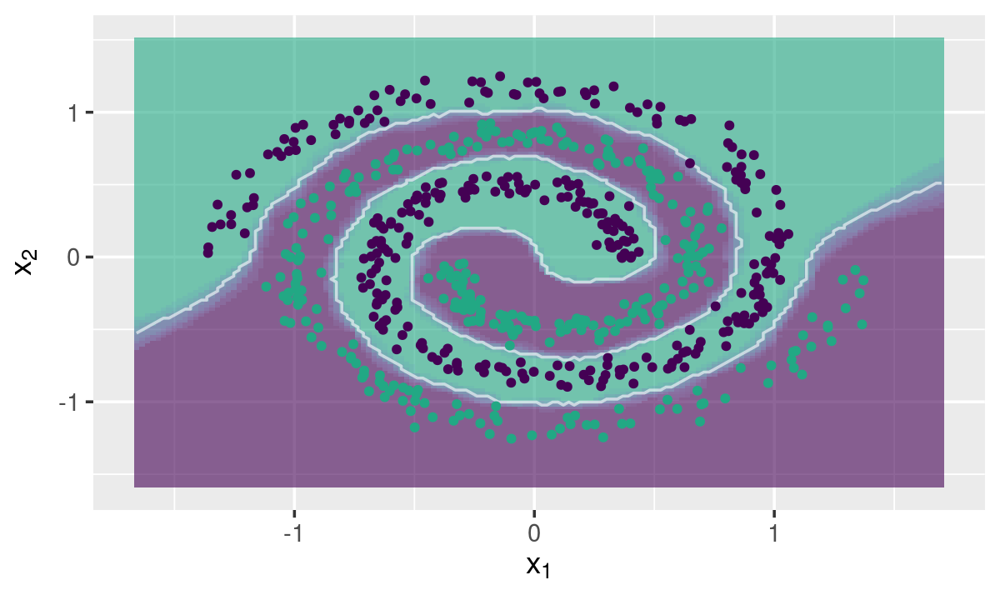
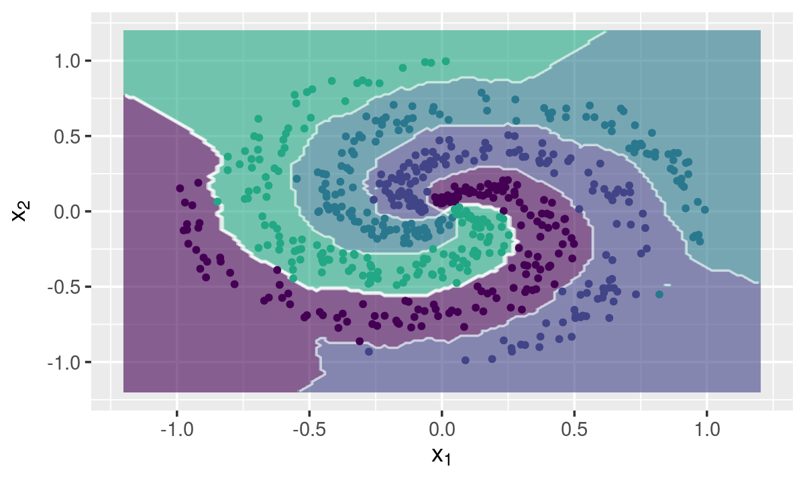

The goal of fastknn is to make it easy for machine learning researchers and Kaggle competitors to create and tune KNN classifiers for very large datasets. It is based on the ANN library for fast nearest neighbor searching.
In this example fastknn is applied over a sample of size 50k from the Covertype dataset. It contains 54 binary variables and 7 possible class labels.
## Load packages
library("fastknn")
library("caTools")
## Load data
data("covertype", package = "fastknn")
x <- as.matrix(covertype[, -55])
y <- as.factor(covertype$Target)
## Split data for training and test
set.seed(123)
tr.idx <- which(caTools::sample.split(Y = y, SplitRatio = 0.7))
x.tr <- x[tr.idx, ]
x.te <- x[-tr.idx, ]
y.tr <- y[tr.idx]
y.te <- y[-tr.idx]
## Fit KNN
t1 <- system.time({
knn.out <- fastknn(x.tr, y.tr, x.te, k = 15, method = "dist")
})
t1| user.self | sys.self | elapsed |
|---|---|---|
| 0.64 | 0.016 | 0.657 |
Extremely fast!
The fastknn() function provides 4 options to normalize data before the nearest neighbors searching process:
normalize="std": standardize variables by removing the mean and scaling to unit variance.normalize="minmax": transforms variables by scaling each one between 0 and 1.normalize="maxabs": scales each variable by its maximum absolute value. This is the best choice for sparse data because it does not shift/center the variables.normalize="robust": scales variables using statistics that are robust to outliers. It removes the median and scales by the interquartile range (IQR).## Apply min-max normalization
knn.norm <- fastknn(x.tr, y.tr, x.te, k = 15, method = "dist", normalize = "minmax")
## Performance without normalization
sprintf("Logloss without normalization: %.3f", classLoss(y.te, prob = knn.out$prob, eval.metric = "logloss"))
## Performance with nromalization
sprintf("Logloss with normalization: %.3f", classLoss(y.te, prob = knn.norm$prob, eval.metric = "logloss"))## [1] "Logloss without normalization: 0.507"## [1] "Logloss with normalization: 0.611"For this dataset, normalization had a negative effect on classification performance, but in many cases it is important to transform variables to the same unit before fitting KNN.
The fastknn provides a n-fold cross-validation procedure to define the best k according to 4 different evaluation metrics:
"overall_error": overall misclassification rate"mean_error": average in-class misclassification rate"auc": average in-class area under the ROC curve"logloss": cross-entropy errorcv.out <- fastknnCV(x, y, k = c(5, 10, 15), method = "dist", folds = 5, eval.metric = "overall_error")
cv.out$cv_table| fold_1 | fold_2 | fold_3 | fold_4 | fold_5 | mean | k |
|---|---|---|---|---|---|---|
| 0.1189 | 0.123 | 0.1274 | 0.1304 | 0.1207 | 0.1241 | 5 |
| 0.1329 | 0.1359 | 0.142 | 0.1388 | 0.1354 | 0.137 | 10 |
| 0.149 | 0.1548 | 0.1549 | 0.1529 | 0.1465 | 0.1516 | 15 |
Parallelization is available. You can specify the number of threads via nthread parameter.
The fastknn provides a plotting function to draw classification decision boundaries for bi-dimensional datasets.
data("spirals", package = "fastknn")
## Split data for training and test
set.seed(123)
tr.idx <- which(caTools::sample.split(Y = spirals$y, SplitRatio = 0.7))
x.tr <- spirals$x[tr.idx, ]
x.te <- spirals$x[-tr.idx, ]
y.tr <- spirals$y[tr.idx]
y.te <- spirals$y[-tr.idx]
## Plot decision boudary
knnDecision(x.tr, y.tr, x.te, y.te, k = 10, method = "dist")
data("multi_spirals", package = "fastknn")
## Split data for training and test
set.seed(123)
tr.idx <- which(caTools::sample.split(Y = multi_spirals$y, SplitRatio = 0.7))
x.tr <- multi_spirals$x[tr.idx, ]
x.te <- multi_spirals$x[-tr.idx, ]
y.tr <- multi_spirals$y[tr.idx]
y.te <- multi_spirals$y[-tr.idx]
## Plot decision boudary
knnDecision(x.tr, y.tr, x.te, y.te, k = 10, method = "dist")
The fastknn provides 2 different estimators to the class membership probabilities:
VOTING
#### 5-fold cross-validation
set.seed(123)
res <- fastknnCV(x, y, k = 10, method = "vote", folds = 5, eval.metric = "logloss")
res$cv_table| fold_1 | fold_2 | fold_3 | fold_4 | fold_5 | mean | k |
|---|---|---|---|---|---|---|
| 0.6081 | 0.5524 | 0.5643 | 0.5682 | 0.6528 | 0.5892 | 10 |
WEIGHTED VOTING
#### 5-fold cross-validation
set.seed(123)
res <- fastknnCV(x, y, k = 10, method = "dist", folds = 5, eval.metric = "logloss")
res$cv_table| fold_1 | fold_2 | fold_3 | fold_4 | fold_5 | mean | k |
|---|---|---|---|---|---|---|
| 0.5586 | 0.5039 | 0.5176 | 0.5181 | 0.604 | 0.5404 | 10 |